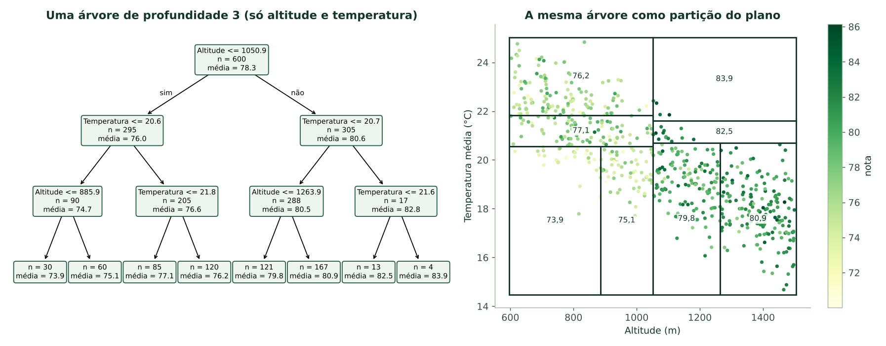
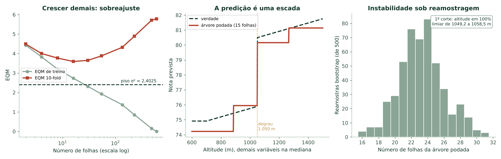

Árvore de regressão (CART)
Divide o espaço das preditoras em retângulos e prevê a média de cada um — descobre degraus e interações sozinha, ao preço de ser instável e grosseira nas partes suaves.
Comece por aqui
Uma árvore de regressão divide o espaço das preditoras em retângulos e prevê, em cada retângulo, a média da resposta dos dados que caíram nele. As divisões são escolhidas uma de cada vez, sempre a que mais reduz a soma de quadrados dos resíduos. O resultado é um conjunto de regras do tipo "se altitude > 1.050 m e temperatura ≤ 20,5 °C, então a nota prevista é 80,2" — que se lê sem nenhuma fórmula.
Os modelos das fichas anteriores — do linear ao GAM — exigem que o analista diga a forma do modelo: quais termos, quais interações. Uma árvore descobre a forma sozinha. Isso a torna fraca como modelo final (ela é instável e aproxima mal funções suaves), mas faz dela a peça básica de três dos métodos mais usados em predição: bagging, florestas aleatórias e boosting.
O que é uma árvore de regressão
O algoritmo CART (classification and regression trees, Breiman et al., 1984) procura, entre todas as variáveis e todos os pontos de corte, a divisão binária que mais reduz a soma de quadrados; aplica a divisão; e repete o mesmo procedimento dentro de cada uma das duas partes, recursivamente. Cada parte final é uma folha, e a predição nela é a média das observações que a compõem.

| Aspecto | Modelo linear / GAM | Árvore de regressão |
|---|---|---|
| Forma da função | Especificada pelo analista | Descoberta pelos dados |
| Interações | Só as incluídas explicitamente | Automáticas (cortes dentro de cortes) |
| Degraus e limiares | Exigem termos especiais | Representação natural |
| Funções suaves | Representação natural | Aproximadas por escadas |
| Variáveis em escalas diferentes | Coeficientes dependem da escala | Invariante a transformações monótonas |
| Estabilidade | Alta | Baixa: pequenas mudanças nos dados mudam a árvore |
| Interpretação | Coeficientes | Regras "se… então" |
Pressupostos e como verificá-los
| Pressuposto ou cuidado | Por que importa | Como verificar |
|---|---|---|
| Observações independentes | A validação cruzada que escolhe a poda supõe isso. | Desenho do estudo; com grupos, valide por grupo. |
| Tamanho da árvore escolhido por validação | A árvore máxima decora os dados. | printcp e plotcp; regra do EP único. |
| n suficiente em cada folha | Média de poucos casos é ruidosa. | minbucket; olhe o n das folhas. |
| Estrutura com limiares ou interações | É onde a árvore ganha dos modelos suaves. | Compare com o linear e o GAM por validação cruzada. |
| Estabilidade da estrutura | A interpretação das regras depende dela. | Refaça a árvore em reamostras bootstrap. |
| Sem extrapolação | Fora dos dados a predição é a da folha mais próxima, constante. | Confira a faixa de cada preditora. |
| Variância aproximadamente homogênea | O critério é soma de quadrados: folhas ruidosas dominam. | Resíduos por folha. |
A árvore não supõe normalidade, linearidade nem aditividade: é por isso que ela é chamada de não paramétrica. Mas a escolha do tamanho da árvore usa validação cruzada, que supõe observações independentes e trocáveis. Com dados agrupados (lotes da mesma fazenda, medidas repetidas da mesma planta), a validação deve deixar grupos inteiros de fora, ou a árvore escolhida será grande demais.
Formulação e cálculo
A árvore com \(M\) folhas representa a função de regressão como uma constante por região:
Em que:
- \(R_m\)
- a \(m\)-ésima região (folha), um retângulo no espaço das preditoras
- \(c_m\)
- a predição na folha: a média das respostas que caem nela
- \(\mathbb{1}(\cdot)\)
- indicadora: vale 1 se \(x\) está na região e 0 caso contrário
- \(M\)
- número de folhas
A escolha de cada corte
Para a variável \(j\) e o ponto \(s\), as duas regiões candidatas são \(R_1=\{x: x_j\le s\}\) e \(R_2=\{x: x_j>s\}\). Escolhe-se o par que minimiza a soma de quadrados resultante:
Para cada variável, basta testar os pontos médios entre valores consecutivos observados; com \(n=600\) e seis variáveis, são cerca de 3.600 candidatos — uma busca exaustiva barata. É um algoritmo guloso: escolhe o melhor corte agora, sem olhar o efeito sobre os cortes futuros.
Exemplo numérico: o primeiro corte nos dados de café
| Variável | Melhor corte | Queda da SQR | % da SQT |
|---|---|---|---|
| Altitude | 1.050,8 | 3158,53 | 54,28% |
| Temperatura | 19,2 | 1234,15 | 21,21% |
| Chuva | 1.597,2 | 113,98 | 1,96% |
| Sombreamento | 45,2 | 34,80 | 0,60% |
| N foliar | 2,8 | 195,60 | 3,36% |
| pH | 4,6 | 207,16 | 3,56% |
A altitude ≤ 1.050,8 m separa 295 lotes, com nota média 75,997, de 305 lotes com média 80,586. Esse único corte retira 54,28% da soma de quadrados total. O degrau verdadeiro está em 1.050 m: a árvore o localizou com erro de menos de um metro, sem que ninguém lhe dissesse que havia um degrau. A temperatura é a segunda melhor variável, mas boa parte do que ela "explica" é a própria altitude, com a qual tem correlação −0,822.
A poda por custo-complexidade
A árvore é crescida até ficar grande e depois podada. Para cada \(\alpha\ge 0\), a subárvore podada \(T_\alpha\) é a que minimiza
Em que:
- \(|T|\)
- número de folhas da subárvore \(T\)
- \(\alpha\)
- preço de cada folha: com \(\alpha=0\) fica a árvore máxima; com \(\alpha\) grande, só a raiz
À medida que \(\alpha\) cresce, as subárvores ótimas formam uma sequência aninhada — é o resultado de Breiman et al. que torna a poda barata — e escolhe-se \(\alpha\) por validação cruzada. No scikit-learn o critério é escrito com a soma de quadrados dividida por \(n\) (parâmetro ccp_alpha); no rpart, dividida pela soma de quadrados da raiz (parâmetro cp). São a mesma poda em escalas diferentes: o \(\alpha=0{,}0443\) desta ficha corresponde a cp ≈ 0,0046 (0,0443 dividido pela variância 9,6974 da raiz).
Propriedades
- A predição é constante por partes: a função ajustada é uma escada.
- Invariante a transformações monótonas das preditoras: usar log(altitude) daria a mesma árvore.
- Interações entram por construção: um corte em sombreamento dentro de um ramo de temperatura é uma interação.
- Seleciona variáveis implicitamente: as que nunca são usadas em cortes não entram no modelo.
- Lida com preditoras categóricas agrupando categorias, e com valores ausentes por surrogate splits (no
rpart). - Alta variância: um corte diferente perto da raiz muda toda a árvore abaixo dele.
- O critério guloso não garante a melhor árvore de um dado tamanho.
- Tende a favorecer variáveis com muitos pontos de corte possíveis.
Como interpretar os resultados
| Elemento | O que informa | Cuidado |
|---|---|---|
| Primeiro corte | A variável e o limiar de maior efeito isolado. | Costuma ser estável quando o efeito é forte. |
| Cortes inferiores | Interações e efeitos menores. | Instáveis: mudam entre reamostras. |
| Média da folha | A predição para quem cai nela. | Veja o n da folha. |
Tabela cptable | Erro relativo e validado por tamanho. | Use xerror, não rel error. |
| Regra do EP único | A menor árvore dentro de um erro-padrão do mínimo. | Prefere simplicidade; aqui coincidiu com o mínimo. |
Importância de variáveis (variable.importance) | Redução total da SQR por variável, incluindo cortes substitutos. | Mistura efeito e correlação entre preditoras. |
"Lotes acima de 1.050,9 m têm nota média 80,6" é uma descrição dos dados. Não significa que subir a lavoura melhora a nota: a altitude vem junto com temperatura mais baixa, e uma árvore escolhe a variável que melhor separa os dados, não a que causa a diferença. Com altitude e temperatura correlacionadas em −0,822, outra amostra poderia ter cortado primeiro em temperatura — nestes dados, as 500 reamostras cortaram sempre em altitude, porque o degrau verdadeiro está nela.
Como executar no R e em Python
Onde executar o código em Python
Não é preciso instalar nada: o Google Colab é um computador na nuvem, gratuito, que executa Python pelo navegador e já traz as bibliotecas usadas aqui (numpy, scipy e matplotlib).
A função rpart(), do pacote rpart (que vem com o R), com method = "anova" para resposta contínua. O argumento control = rpart.control(cp = 0, xval = 10) cresce a árvore máxima e calcula o erro por validação cruzada de 10 dobras para cada nível de poda; printcp() mostra a tabela, plotcp() o gráfico, e prune(arv, cp = …) devolve a árvore podada. O pacote rpart.plot desenha a árvore com as médias e os tamanhos das folhas. Em Python, sklearn.tree.DecisionTreeRegressor com ccp_alpha, e cost_complexity_pruning_path para a sequência de podas.
library(rpart)
arv <- rpart(nota ~ alt + temp + chuva + somb + nfol + ph, data = cafe,
method = "anova", control = rpart.control(cp = 0, xval = 10))
printcp(arv); plotcp(arv)
poda <- prune(arv, cp = arv$cptable[which.min(arv$cptable[, "xerror"]), "CP"])
print(poda)
Exemplo de aplicação
Contexto dos dados
Os dados são fictícios e foram criados pelo autor: 600 lotes de café, cada um com a nota sensorial (escala SCA, de 70,0 a 86,1) e seis variáveis da lavoura — altitude (600 a 1.500 m), temperatura média (14 a 26 °C), chuva anual (mm), sombreamento (%), nitrogênio foliar (dag/kg) e pH do solo. Um lote é fino quando a nota é 80 ou mais (204 lotes, 34,0%). O processo gerador é conhecido e foi desenhado para ter as duas estruturas que os modelos aditivos não representam: um degrau de +4,6 pontos acima de 1.050 m de altitude e uma interação — o sombreamento melhora a nota quando a temperatura passa de 20,5 °C e a piora abaixo disso —, além de partes suaves em chuva, nitrogênio e pH e um erro de desvio-padrão 1,55. Altitude e temperatura têm correlação de −0,822, como na realidade. Como a verdade é conhecida, sabem-se os dois pisos: nenhum modelo de regressão pode ter erro quadrático esperado abaixo de \(\sigma^2=2{,}4025\), e nenhum classificador pode errar menos que o erro de Bayes, 0,1596. O mesmo conjunto atravessa as dez fichas dos grupos de árvores e de classificadores, o que permite comparar todos os métodos na mesma régua.
Código em R
# Árvore de regressão (CART): exemplo completo ----
# Pacotes: rpart (incluído na instalação do R) e rpart.plot (opcional)
# Dados fictícios: 600 lotes de café (arquivo cafe.csv, pasta scripts/ do site).
# Baixe o arquivo para a pasta de trabalho, ou leia direto do endereço:
url <- "https://cassiushenrique.github.io/ModelosEstatisticos/scripts/cafe.csv"
cafe <- if (file.exists("cafe.csv")) read.csv("cafe.csv") else read.csv(url)
str(cafe) # nota, fino (0/1), alt, temp, chuva, somb, nfol, ph
cafe$fino_f <- factor(cafe$fino, levels = c(0, 1), labels = c("nao", "fino"))
table(cafe$fino_f)
library(rpart)
# ---- 1. A referência: modelos suaves
f <- nota ~ alt + temp + chuva + somb + nfol + ph
summary(lm(f, data = cafe))$r.squared
# ---- 2. Crescer a árvore máxima (cp = 0) com validação cruzada interna
set.seed(1)
arv_max <- rpart(f, data = cafe, method = "anova",
control = rpart.control(cp = 0, minsplit = 2, minbucket = 1, xval = 10))
printcp(arv_max) # tabela: cp, número de cortes, erro relativo, xerror, xstd
plotcp(arv_max) # erro validado em função de cp (com a linha do EP único)
# ---- 3. Podar: o menor xerror, ou a regra do erro-padrão único
tab <- arv_max$cptable
i_min <- which.min(tab[, "xerror"])
cp_min <- tab[i_min, "CP"]
lim <- tab[i_min, "xerror"] + tab[i_min, "xstd"]
cp_1ep <- tab[min(which(tab[, "xerror"] <= lim)), "CP"]
arv <- prune(arv_max, cp = cp_1ep)
print(arv)
# install.packages("rpart.plot")
library(rpart.plot)
rpart.plot(arv, type = 2, extra = 101, digits = 3)
# ---- 4. A predição é uma escada: variar só a altitude
grade <- data.frame(alt = seq(600, 1500, by = 10),
temp = median(cafe$temp), chuva = median(cafe$chuva),
somb = median(cafe$somb), nfol = median(cafe$nfol), ph = median(cafe$ph))
plot(grade$alt, predict(arv, grade), type = "s", lwd = 2,
xlab = "Altitude (m)", ylab = "Nota prevista")
abline(v = 1050, lty = 3)
# ---- 5. Instabilidade: a mesma análise em reamostras bootstrap
set.seed(3)
info <- t(replicate(200, {
i <- sample(nrow(cafe), replace = TRUE)
a <- prune(rpart(f, data = cafe[i, ], control = rpart.control(cp = 0, xval = 0)), cp = cp_1ep)
c(var1 = as.character(a$frame$var[1]), folhas = sum(a$frame$var == "<leaf>"))
}))
table(info[, "var1"]) # variável do primeiro corte
summary(as.numeric(info[, "folhas"])) # número de folhas
# ---- 6. Comparação por validação cruzada de 10 dobras
set.seed(1)
d <- sample(rep(1:10, length.out = nrow(cafe)))
e_lin <- e_arv <- numeric(nrow(cafe))
for (j in 1:10) {
tr <- cafe[d != j, ]; te <- cafe[d == j, ]
e_lin[d == j] <- te$nota - predict(lm(f, data = tr), te)
a <- rpart(f, data = tr, control = rpart.control(cp = 0, xval = 10))
t2 <- a$cptable; k <- which.min(t2[, "xerror"])
e_arv[d == j] <- te$nota - predict(prune(a, cp = t2[k, "CP"]), te)
}
c(linear = mean(e_lin^2), arvore = mean(e_arv^2))
# A árvore de regressão também serve para resposta de contagem ou de
# sobrevivência: method = "poisson" e method = "exp" no rpart.
A mesma análise em Python, com os resultados
Cole o código em um notebook do Google Colab ↗ e execute com Shift+Enter. Os valores abaixo são a saída desse código.
import numpy as np
# ------------------------------------------------------------------
# Bloco comum às fichas deste grupo: funções auxiliares e dados (cab16)
# ------------------------------------------------------------------
import numpy as np
from scipy.stats import norm
# ------------------------------------------------------------------
# Bloco comum às fichas deste grupo: funções auxiliares e dados (dados16)
# ------------------------------------------------------------------
import numpy as np
import pandas as pd
def le_csv(nome):
"""Lê o arquivo de dados da ficha: primeiro na pasta atual; se não
estiver lá (por exemplo, no Google Colab), direto do site."""
try:
return pd.read_csv(nome)
except FileNotFoundError:
return pd.read_csv('https://cassiushenrique.github.io/ModelosEstatisticos/scripts/' + nome)
# Dados fictícios: 600 lotes de café (arquivo cafe.csv, pasta scripts/ do site)
cafe = le_csv('cafe.csv')
ALT, TEMP, CHUVA = (cafe[k].to_numpy(float) for k in ('alt', 'temp', 'chuva'))
SOMB, NFOL, PH = (cafe[k].to_numpy(float) for k in ('somb', 'nfol', 'ph'))
NOTA = cafe['nota'].to_numpy(float); FINO = cafe['fino'].to_numpy(int)
NOMES=['alt','temp','chuva','somb','nfol','ph']
ROT={'alt':'Altitude','temp':'Temperatura','chuva':'Chuva','somb':'Sombreamento','nfol':'N foliar','ph':'pH'}
X=np.column_stack([ALT,TEMP,CHUVA,SOMB,NFOL,PH])
NC,PC=X.shape; SIGN=1.55
def f_nota(alt,temp,chuva,somb,nfol,ph):
deg=4.6*(np.asarray(alt)>=1050); rampa=0.0028*np.clip(np.asarray(alt)-700,0,None)
inter=np.where(np.asarray(temp)>20.5,0.052*np.asarray(somb),-0.030*np.asarray(somb))
agua=-2.6e-6*(np.asarray(chuva)-1450)**2
nitro=2.9*np.log(np.asarray(nfol)/1.6); acid=-1.9*(np.asarray(ph)-5.4)**2
return 74.0+deg+rampa+inter+agua+nitro+acid
def verdade(A): return f_nota(A[:,0],A[:,1],A[:,2],A[:,3],A[:,4],A[:,5])
# ------------------------------------------------------------------ fim do bloco comum
def c(v, d=4): return ('%.*f' % (d, v)).replace('.', ',')
def eqm(o, p): return float(np.mean((np.asarray(o) - np.asarray(p))**2))
def r2(o, p): return 1 - float(np.sum((np.asarray(o)-np.asarray(p))**2))/float(np.sum((np.asarray(o)-np.mean(o))**2))
def acur(o, p): return float(np.mean(np.asarray(o) == np.asarray(p)))
MU = verdade(X) # média verdadeira da nota
PVER = 1 - norm.cdf((80 - MU)/SIGN) # P(fino | x) verdadeira
ERRO_BAYES = float(np.mean(np.minimum(PVER, 1 - PVER)))
EQM_PISO = SIGN**2
def dobras(n, k, seed):
rg = np.random.default_rng(seed)
d = np.tile(np.arange(k), int(np.ceil(n/k)))[:n]; rg.shuffle(d); return d
def cv_reg(fabrica, A, y, k=10, seed=0, reps=1):
"""EQM por validação cruzada. fabrica() devolve um estimador sklearn novo."""
tot = []
for r in range(reps):
d = dobras(len(y), k, seed + 101*r); e = np.empty(len(y))
for j in range(k):
tr, te = d != j, d == j
m = fabrica().fit(A[tr], y[tr]); e[te] = y[te] - m.predict(A[te])
tot.append(float(np.mean(e**2)))
return float(np.mean(tot)), (float(np.std(tot, ddof=1)) if reps > 1 else 0.0)
def cv_clf(fabrica, A, y, k=10, seed=0, reps=1, prob=False):
"""Erro de classificação (e, se prob, log-loss e Brier) por validação cruzada."""
err = []; ll = []; br = []
for r in range(reps):
d = dobras(len(y), k, seed + 101*r); pred = np.empty(len(y)); pp = np.empty(len(y))
for j in range(k):
tr, te = d != j, d == j
m = fabrica().fit(A[tr], y[tr]); pred[te] = m.predict(A[te])
if prob: pp[te] = m.predict_proba(A[te])[:, 1]
err.append(float(np.mean(pred != y)))
if prob:
q = np.clip(pp, 1e-6, 1 - 1e-6)
ll.append(float(-np.mean(y*np.log(q) + (1 - y)*np.log(1 - q))))
br.append(float(np.mean((pp - y)**2)))
if prob: return float(np.mean(err)), float(np.mean(ll)), float(np.mean(br))
return float(np.mean(err)), (float(np.std(err, ddof=1)) if reps > 1 else 0.0)
def padroniza(A, ref=None):
ref = A if ref is None else ref
mu, sd = ref.mean(0), ref.std(0, ddof=1); return (A - mu)/sd, mu, sd
DADOS_TXT = ('600 lotes de café, nota sensorial (escala SCA, de 70 a 86) e seis variáveis de lavoura: '
'altitude, temperatura média, chuva anual, sombreamento, N foliar e pH. Lote "fino" = nota >= 80.')
# ------------------------------------------------------------------ fim do bloco comum
from sklearn.tree import DecisionTreeRegressor, export_text
from sklearn.linear_model import LinearRegression
from sklearn.preprocessing import SplineTransformer
from sklearn.pipeline import make_pipeline
from sklearn.linear_model import Ridge
y=NOTA
print('LOTES DE CAFÉ:',DADOS_TXT)
print('Dados fictícios, com processo gerador CONHECIDO. A nota tem:')
print(' - um DEGRAU de +4,6 pontos acima de 1.050 m de altitude;')
print(' - uma INTERAÇÃO: o sombreamento AJUDA acima de 20,5 C e ATRAPALHA abaixo;')
print(' - partes suaves em chuva, N foliar e pH; erro de desvio-padrão 1,55.')
print()
print(' variância da nota = %s | sigma² = %s (o piso)'%(c(float(y.var(ddof=1))),c(EQM_PISO)))
lin,_=cv_reg(LinearRegression,X,y,10,0,5)
spl,_=cv_reg(lambda: make_pipeline(SplineTransformer(n_knots=6,degree=3),Ridge(alpha=1e-3)),X,y,10,0,5)
print(' EQM validado do modelo LINEAR = %s'%c(lin))
print(' EQM validado do modelo ADITIVO com splines = %s'%c(spl))
print(' EQM da função VERDADEIRA = %s'%c(eqm(y,MU)))
print()
print('O modelo aditivo suave não representa nem o degrau nem a interação.')
print('\n'+'='*70)
print('A PRIMEIRA DIVISÃO, procurada exaustivamente')
print('Para cada variável e cada corte possível, calcula-se quanto a soma de')
print('quadrados cai ao separar os lotes em dois grupos e prever cada um pela')
print('sua média.')
SQT=float(np.sum((y-y.mean())**2))
print()
print('%-14s %12s %16s %14s'%('variável','melhor corte','queda da SQR','% da SQT'))
melh=[]
for j,nm in enumerate(NOMES):
xs=np.sort(np.unique(X[:,j])); cortes=(xs[:-1]+xs[1:])/2
best=(0,None)
for t in cortes:
e=y[X[:,j]<=t]; d=y[X[:,j]>t]
if len(e)<5 or len(d)<5: continue
q=SQT-(np.sum((e-e.mean())**2)+np.sum((d-d.mean())**2))
if q>best[0]: best=(q,t)
melh.append((best[0],nm,best[1]))
print('%-14s %12s %16s %14s'%(ROT[nm],c(best[1],1),c(best[0],2),c(100*best[0]/SQT,2)+'%'))
melh.sort(reverse=True)
q,nm,t=melh[0]
e=y[X[:,NOMES.index(nm)]<=t]; d=y[X[:,NOMES.index(nm)]>t]
print()
print('A melhor divisão é %s <= %s, que separa %d e %d lotes, com médias'%(ROT[nm],c(t,1),len(e),len(d)))
print('%s e %s. O degrau verdadeiro está em 1.050 m.'%(c(e.mean(),3),c(d.mean(),3)))
print('\n'+'='*70)
print('CRESCER E PODAR: a profundidade e o custo-complexidade')
print()
print('%11s %8s %14s %16s'%('profundidade','folhas','EQM treino','EQM 10-fold'))
for dp in [1,2,3,4,5,6,8,10,15,None]:
m=DecisionTreeRegressor(max_depth=dp,random_state=0).fit(X,y)
cv,_=cv_reg(lambda dp=dp: DecisionTreeRegressor(max_depth=dp,random_state=0),X,y,10,0,5)
print('%11s %8d %14s %16s'%(str(dp) if dp else 'sem limite',m.get_n_leaves(),c(eqm(y,m.predict(X))),c(cv)))
print()
print('Poda por custo-complexidade: a árvore máxima é podada minimizando')
print(' SQR(T) + alpha * |T|, |T| = número de folhas')
cam=DecisionTreeRegressor(random_state=0).cost_complexity_pruning_path(X,y)
alphas=np.unique(np.concatenate([[0],np.quantile(cam.ccp_alphas[cam.ccp_alphas>0],np.linspace(0,1,40))]))
res=[]
d=dobras(NC,10,0)
for a in alphas:
erros=[]; e=np.empty(NC)
for j in range(10):
tr,te=d!=j,d==j
m=DecisionTreeRegressor(ccp_alpha=a,random_state=0).fit(X[tr],y[tr])
erros.append(eqm(y[te],m.predict(X[te]))); e[te]=y[te]-m.predict(X[te])
nf=DecisionTreeRegressor(ccp_alpha=a,random_state=0).fit(X,y).get_n_leaves()
res.append((a,float(np.mean(e**2)),float(np.std(erros,ddof=1)/np.sqrt(10)),nf))
res=np.array(res); jm=int(np.argmin(res[:,1]))
lim=res[jm,1]+res[jm,2]
j1=int(max(i for i in range(len(res)) if res[i,1]<=lim))
print()
print('%12s %8s %14s'%('alpha','folhas','EQM 10-fold'))
for i in sorted(set([0,5,10,15,20,25,30,jm,j1,len(res)-1])):
mk=' <- menor EQM' if i==jm else (' <- regra do EP único' if i==j1 else '')
print('%12s %8d %14s%s'%(c(res[i,0],4),int(res[i,3]),c(res[i,1]),mk))
amin,a1=res[jm,0],res[j1,0]
print()
print(' menor EQM: alpha = %s, %d folhas, EQM %s'%(c(amin,4),int(res[jm,3]),c(res[jm,1])))
print(' EP único : alpha = %s, %d folhas, EQM %s'%(c(a1,4),int(res[j1,3]),c(res[j1,1])))
print('\n'+'='*70)
print('A ÁRVORE PODADA (regra do EP único), por extenso')
arv=DecisionTreeRegressor(ccp_alpha=a1,random_state=0).fit(X,y)
print()
print(export_text(arv,feature_names=[ROT[k] for k in NOMES],decimals=1))
print('A árvore ENCONTROU o degrau: o primeiro corte é em altitude e o valor')
print('está perto de 1.050 m. A interação aparece como cortes em sombreamento')
print('DENTRO de ramos definidos por temperatura — que é exatamente a forma de')
print('uma árvore representar "o efeito de uma variável depende de outra".')
print('\n'+'='*70)
print('A PREDIÇÃO É UMA ESCADA')
print('Uma árvore prevê a MÉDIA DA FOLHA: a função ajustada é constante por')
print('pedaços. Variando só a altitude, com as demais no valor mediano:')
med=np.median(X,axis=0)
print()
print('%12s %16s %16s'%('altitude','árvore podada','verdade'))
for a in [650,800,950,1040,1060,1150,1300,1450]:
xx=med.copy(); xx[0]=a
print('%12s %16s %16s'%(c(a,0),c(float(arv.predict(xx[None,:])[0]),3),c(float(verdade(xx[None,:])[0]),3)))
print()
print('Acima de 1.050 a verdade é uma rampa suave mais um degrau; a árvore')
print('acerta o degrau e aproxima a rampa por degraus menores.')
print('\n'+'='*70)
print('INSTABILIDADE: a mesma análise em 500 reamostras bootstrap')
rg=np.random.default_rng(3)
pri=[];cortes=[];nfolhas=[]
gx=np.tile(med,(1,1))
for r in range(500):
i=rg.integers(0,NC,NC)
m=DecisionTreeRegressor(ccp_alpha=a1,random_state=0).fit(X[i],y[i])
t=m.tree_; pri.append(NOMES[t.feature[0]]); cortes.append(t.threshold[0]); nfolhas.append(m.get_n_leaves())
pri=np.array(pri); cortes=np.array(cortes)
print()
for nm in NOMES:
q=np.mean(pri==nm)
if q>0: print(' primeiro corte em %-12s: %5.1f%% das reamostras'%(ROT[nm],100*q))
ca=cortes[pri=='alt']
print(' quando é altitude, o corte vai de %s a %s (mediana %s)'%(c(ca.min(),1),c(ca.max(),1),c(np.median(ca),1)))
print(' número de folhas: de %d a %d (mediana %d)'%(min(nfolhas),max(nfolhas),int(np.median(nfolhas))))
print()
print('O PRIMEIRO corte é estável, porque o degrau é forte. Mas o número de')
print('folhas varia muito, e os cortes de baixo mudam de reamostra para')
print('reamostra: é essa instabilidade que as fichas bagging e random forest')
print('vão explorar.')
print('\n'+'='*70)
print('A SÍNTESE: árvore contra os modelos suaves')
cv_arv,_=cv_reg(lambda: DecisionTreeRegressor(ccp_alpha=a1,random_state=0),X,y,10,0,5)
cv_amin,_=cv_reg(lambda: DecisionTreeRegressor(ccp_alpha=amin,random_state=0),X,y,10,0,5)
cv_max,_=cv_reg(lambda: DecisionTreeRegressor(random_state=0),X,y,10,0,5)
print()
print('%-38s %14s'%('modelo','EQM 10-fold'))
for nm,v in [('média (modelo nulo)',float(y.var(ddof=1))),('linear nas seis',lin),('aditivo com splines',spl),
('árvore sem poda',cv_max),('árvore podada, menor EQM',cv_amin),('árvore podada, EP único',cv_arv),
('função VERDADEIRA (piso)',eqm(y,MU))]:
print('%-38s %14s'%(nm,c(v)))
print()
print('A árvore podada bate o linear e o aditivo suave porque o processo tem')
print('degrau e interação, que é o que árvores representam bem. Mas fica longe')
print('do piso: aproximar as partes SUAVES por degraus custa caro.')
Resultados da execução
LOTES DE CAFÉ: 600 lotes de café, nota sensorial (escala SCA, de 70 a 86) e seis variáveis de lavoura: altitude, temperatura média, chuva anual, sombreamento, N foliar e pH. Lote "fino" = nota >= 80.
Dados fictícios, com processo gerador CONHECIDO. A nota tem:
- um DEGRAU de +4,6 pontos acima de 1.050 m de altitude;
- uma INTERAÇÃO: o sombreamento AJUDA acima de 20,5 C e ATRAPALHA abaixo;
- partes suaves em chuva, N foliar e pH; erro de desvio-padrão 1,55.
variância da nota = 9,7136 | sigma² = 2,4025 (o piso)
EQM validado do modelo LINEAR = 5,2299
EQM validado do modelo ADITIVO com splines = 4,0420
EQM da função VERDADEIRA = 2,5695
O modelo aditivo suave não representa nem o degrau nem a interação.
======================================================================
A PRIMEIRA DIVISÃO, procurada exaustivamente
Para cada variável e cada corte possível, calcula-se quanto a soma de
quadrados cai ao separar os lotes em dois grupos e prever cada um pela
sua média.
variável melhor corte queda da SQR % da SQT
Altitude 1050,8 3158,53 54,28%
Temperatura 19,2 1234,15 21,21%
Chuva 1597,2 113,98 1,96%
Sombreamento 45,2 34,80 0,60%
N foliar 2,8 195,60 3,36%
pH 4,6 207,16 3,56%
A melhor divisão é Altitude <= 1050,8, que separa 295 e 305 lotes, com médias
75,997 e 80,586. O degrau verdadeiro está em 1.050 m.
======================================================================
CRESCER E PODAR: a profundidade e o custo-complexidade
profundidade folhas EQM treino EQM 10-fold
1 2 4,4332 4,4916
2 4 3,8257 4,0007
3 8 3,2060 3,7679
4 16 2,7321 3,5916
5 30 2,3139 3,6501
6 54 1,9256 3,8764
8 134 1,3723 4,3185
10 229 0,8513 4,8921
15 482 0,1529 5,7107
sem limite 597 0,0000 5,7852
Poda por custo-complexidade: a árvore máxima é podada minimizando
SQR(T) + alpha * |T|, |T| = número de folhas
alpha folhas EQM 10-fold
0,0000 597 5,9833
0,0000 541 5,9841
0,0000 471 5,9780
0,0002 401 5,9810
0,0005 330 5,9480
0,0016 259 5,8527
0,0041 180 5,6637
0,0443 15 3,6220 <- menor EQM
5,2642 1 8,2112
menor EQM: alpha = 0,0443, 15 folhas, EQM 3,6220
EP único : alpha = 0,0443, 15 folhas, EQM 3,6220
======================================================================
A ÁRVORE PODADA (regra do EP único), por extenso
|--- Altitude <= 1050.9
| |--- Temperatura <= 20.6
| | |--- N foliar <= 2.8
| | | |--- value: [73.9]
| | |--- N foliar > 2.8
| | | |--- Altitude <= 885.7
| | | | |--- value: [74.2]
| | | |--- Altitude > 885.7
| | | | |--- value: [75.9]
| |--- Temperatura > 20.6
| | |--- Sombreamento <= 34.0
| | | |--- N foliar <= 2.8
| | | | |--- pH <= 6.0
| | | | | |--- value: [75.5]
| | | | |--- pH > 6.0
| | | | | |--- value: [73.4]
| | | |--- N foliar > 2.8
| | | | |--- Altitude <= 676.9
| | | | | |--- value: [75.2]
| | | | |--- Altitude > 676.9
| | | | | |--- value: [77.0]
| | |--- Sombreamento > 34.0
| | | |--- Sombreamento <= 50.5
| | | | |--- value: [77.4]
| | | |--- Sombreamento > 50.5
| | | | |--- value: [79.0]
|--- Altitude > 1050.9
| |--- pH <= 4.7
| | |--- value: [77.4]
| |--- pH > 4.7
| | |--- pH <= 6.5
| | | |--- Temperatura <= 20.5
| | | | |--- Altitude <= 1265.6
| | | | | |--- value: [80.2]
| | | | |--- Altitude > 1265.6
| | | | | |--- N foliar <= 2.1
| | | | | | |--- value: [79.1]
| | | | | |--- N foliar > 2.1
| | | | | | |--- value: [81.1]
| | | |--- Temperatura > 20.5
| | | | |--- value: [82.9]
| | |--- pH > 6.5
| | | |--- value: [76.4]
A árvore ENCONTROU o degrau: o primeiro corte é em altitude e o valor
está perto de 1.050 m. A interação aparece como cortes em sombreamento
DENTRO de ramos definidos por temperatura — que é exatamente a forma de
uma árvore representar "o efeito de uma variável depende de outra".
======================================================================
A PREDIÇÃO É UMA ESCADA
Uma árvore prevê a MÉDIA DA FOLHA: a função ajustada é constante por
pedaços. Variando só a altitude, com as demais no valor mediano:
altitude árvore podada verdade
650 74,222 74,915
800 74,222 75,195
950 75,949 75,615
1040 75,949 75,867
1060 80,159 80,523
1150 80,159 80,775
1300 81,140 81,195
1450 81,140 81,615
Acima de 1.050 a verdade é uma rampa suave mais um degrau; a árvore
acerta o degrau e aproxima a rampa por degraus menores.
======================================================================
INSTABILIDADE: a mesma análise em 500 reamostras bootstrap
primeiro corte em Altitude : 100.0% das reamostras
quando é altitude, o corte vai de 1049,2 a 1058,5 (mediana 1050,9)
número de folhas: de 16 a 31 (mediana 23)
O PRIMEIRO corte é estável, porque o degrau é forte. Mas o número de
folhas varia muito, e os cortes de baixo mudam de reamostra para
reamostra: é essa instabilidade que as fichas bagging e random forest
vão explorar.
======================================================================
A SÍNTESE: árvore contra os modelos suaves
modelo EQM 10-fold
média (modelo nulo) 9,7136
linear nas seis 5,2299
aditivo com splines 4,0420
árvore sem poda 5,7852
árvore podada, menor EQM 3,6757
árvore podada, EP único 3,6757
função VERDADEIRA (piso) 2,5695
A árvore podada bate o linear e o aditivo suave porque o processo tem
degrau e interação, que é o que árvores representam bem. Mas fica longe
do piso: aproximar as partes SUAVES por degraus custa caro.
| Profundidade | Folhas | EQM de treino | EQM 10-fold |
|---|---|---|---|
| 1 | 2 | 4,4332 | 4,4916 |
| 2 | 4 | 3,8257 | 4,0007 |
| 3 | 8 | 3,2060 | 3,7679 |
| 4 | 16 | 2,7321 | 3,5916 |
| 5 | 30 | 2,3139 | 3,6501 |
| 6 | 54 | 1,9256 | 3,8764 |
| 8 | 134 | 1,3723 | 4,3185 |
| 10 | 229 | 0,8513 | 4,8921 |
| 15 | 482 | 0,1529 | 5,7107 |
| sem limite | 597 | 0,0000 | 5,7852 |
| α (sklearn) | Folhas | EQM 10-fold |
|---|---|---|
| 0,0000 | 597 | 5,9833 |
| 0,0005 | 330 | 5,9480 |
| 0,0041 | 180 | 5,6637 |
| 0,0443 | 15 | 3,6220 |
| 5,2642 | 1 | 8,2112 |
A árvore podada tem 15 folhas, e nesta grade a regra do erro-padrão único escolheu o mesmo \(\alpha\) que o menor erro. O primeiro corte é altitude ≤ 1.050,9; dentro do ramo baixo e quente (temperatura acima de 20,6 °C), a árvore corta em sombreamento em 34,0% e depois em 50,5%, com folhas de 77,4 e 79,0 — é a interação verdadeira, em que a sombra ajuda no calor.
| Altitude (m) | Árvore podada | Verdade |
|---|---|---|
| 650 | 74,222 | 74,915 |
| 800 | 74,222 | 75,195 |
| 950 | 75,949 | 75,615 |
| 1.040 | 75,949 | 75,867 |
| 1.060 | 80,159 | 80,523 |
| 1.150 | 80,159 | 80,775 |
| 1.300 | 81,140 | 81,195 |
| 1.450 | 81,140 | 81,615 |
| Modelo | EQM 10-fold |
|---|---|
| Média (modelo nulo) | 9,7136 |
| Linear nas seis | 5,2299 |
| Árvore sem poda | 5,7852 |
| Aditivo com splines | 4,0420 |
| Árvore podada | 3,6757 |
| Função verdadeira (o piso) | 2,5695 |
Leitura: a árvore podada bate o modelo linear em 30% e o modelo aditivo com splines em 9%, porque o processo gerador tem exatamente o que a árvore representa bem — um degrau e uma interação — e que um modelo aditivo suave não representa. Mas ela fica longe do piso: 3,6757 contra 2,5695. O que falta está visível na tabela da escada: entre os degraus, a verdade é uma rampa, e a árvore só sabe fazer patamares. As partes suaves (chuva, nitrogênio, pH) custam caro.
A árvore sem poda é pior que o modelo linear (5,7852 contra 5,2299): com 597 folhas para 600 lotes, cada folha é praticamente uma observação, e a predição reproduz o ruído. O erro de treino zero é o retrato perfeito do sobreajuste.
Instabilidade: nas 500 reamostras bootstrap, o primeiro corte foi sempre em altitude, entre 1.049,2 e 1.058,5 m — estável, porque o degrau é forte. Mas o número de folhas variou de 16 a 31 (mediana 23), e os cortes inferiores mudam de uma reamostra para outra. Essa variância é o defeito que as fichas bagging e random forest corrigem tirando a média de muitas árvores.
Erros comuns
| Erro | Como evitar |
|---|---|
| Usar a árvore máxima | Pode-se sempre e deve-se: validação cruzada. |
Escolher o tamanho pelo erro de treino (rel error) | Ele só cai; use xerror. |
| Interpretar cortes profundos como achados | São instáveis; confira em reamostras. |
| Ler a regra como efeito causal | A árvore escolhe a melhor separadora, não a causa. |
| Concluir que uma variável "não importa" porque não aparece | Pode ter sido mascarada por uma correlacionada. |
| Extrapolar | Fora da faixa, a predição é constante. |
| Esquecer de fixar a semente | O xerror depende das dobras sorteadas. |
| Usar como modelo final quando a relação é suave | Um GAM ou um comitê de árvores será melhor. |
| Validar com observações dependentes misturadas | Deixe grupos inteiros de fora. |
Alternativas e quando cada uma é preferível
| Procedimento | Quando preferir |
|---|---|
| Bagging | Quando a predição importa mais que uma árvore legível. |
| Random forest | O padrão para predição com árvores; robusto e com pouco ajuste. |
| Gradient boosting | Quando se quer o menor erro e se aceita ajustar hiperparâmetros. |
| BART | Quando se quer predição com intervalos de credibilidade. |
| GAM | Quando as relações são suaves e aditivas. |
Árvores de inferência condicional (partykit::ctree) | Quando se quer cortes escolhidos por testes, sem viés para variáveis com muitos valores. |
Árvores com modelos nas folhas (partykit::mob, M5) | Quando dentro de cada grupo há uma relação linear. |
| Árvore de classificação | Quando a resposta é uma classe. |
- Ajuste o modelo linear e um GAM como referência.
- Cresça a árvore máxima com
cp = 0e validação cruzada. - Escolha a poda pelo menor
xerrorou pela regra do EP único. - Desenhe a árvore e leia os primeiros cortes.
- Verifique a estabilidade em reamostras bootstrap.
- Compare o erro validado com o das referências.
- Se a predição for o objetivo, passe a um comitê de árvores.
Referências desta ficha
- BREIMAN, Leo; FRIEDMAN, Jerome H.; OLSHEN, Richard A.; STONE, Charles J. Classification and regression trees. Belmont: Wadsworth, 1984.
- MORGAN, James N.; SONQUIST, John A. Problems in the analysis of survey data, and a proposal. Journal of the American Statistical Association, v. 58, n. 302, p. 415-434, 1963.
- HOTHORN, Torsten; HORNIK, Kurt; ZEILEIS, Achim. Unbiased recursive partitioning: a conditional inference framework. Journal of Computational and Graphical Statistics, v. 15, n. 3, p. 651-674, 2006.
- LOH, Wei-Yin. Fifty years of classification and regression trees. International Statistical Review, v. 82, n. 3, p. 329-348, 2014.
- THERNEAU, Terry M.; ATKINSON, Elizabeth J. An introduction to recursive partitioning using the RPART routines. Rochester: Mayo Foundation, 2023. (Vinheta do pacote rpart.)
- HASTIE, Trevor; TIBSHIRANI, Robert; FRIEDMAN, Jerome. The elements of statistical learning. 2. ed. New York: Springer, 2009.
- JAMES, Gareth; WITTEN, Daniela; HASTIE, Trevor; TIBSHIRANI, Robert. An introduction to statistical learning: with applications in R. 2. ed. New York: Springer, 2021.
- THERNEAU, Terry; ATKINSON, Beth. rpart: recursive partitioning and regression trees. R package. Disponível em: https://CRAN.R-project.org/package=rpart.
- R CORE TEAM. R: a language and environment for statistical computing. Vienna: R Foundation for Statistical Computing, 2026. Disponível em: https://www.r-project.org/.
- POSIT TEAM. RStudio: integrated development environment for R. Boston: Posit Software, PBC. Disponível em: https://posit.co/download/rstudio-desktop/.
- PEDREGOSA, Fabian et al. Scikit-learn: machine learning in Python. Journal of Machine Learning Research, v. 12, p. 2825-2830, 2011. (Função
sklearn.datasets.load_iris.) - VIRTANEN, Pauli et al. SciPy 1.0: fundamental algorithms for scientific computing in Python. Nature Methods, v. 17, p. 261-272, 2020. DOI: 10.1038/s41592-019-0686-2. (Funções do módulo
scipy.stats.) - HARRIS, Charles R. et al. Array programming with NumPy. Nature, v. 585, p. 357-362, 2020. DOI: 10.1038/s41586-020-2649-2.
- HUNTER, John D. Matplotlib: a 2D graphics environment. Computing in Science & Engineering, v. 9, n. 3, p. 90-95, 2007.
- GOOGLE. Google Colaboratory. Disponível em: https://colab.research.google.com/.
- As figuras desta ficha foram elaboradas pelo autor.

Prof. Dr. Cássius Henrique Xavier Oliveira
Professor · ICTIN/UFLA · Estatística, Confiabilidade e Ciência de Dados.
Conheça minha trajetória e projetos →